Nyzo version 574 (commit on GitHub) adds trusted-message verification to the sentinel.
This version affects the sentinel. If you are updating your sentinel, please check operation after the update. Incorrectly configured sentinels may no longer work after the update due to new protections, even if they previously worked properly.
The changes in this version are due to a bug that was reported by a member of the community. These notes will be amended later with an address for receiving any bounty that the cycle chooses to award. As was noted in the release notes of version 572, we feel that delaying bounty transactions until the deployment of NTTP-3 is warranted.
In Block, spaces were added to the toString() method. This allows for better line-wrapping behavior in the Last block transmitted field of the sentinel web UI. The display will not update immediately when the sentinel is restarted running this version, but it will update the next time the sentinel sends a block to the cycle to protect a verifier.
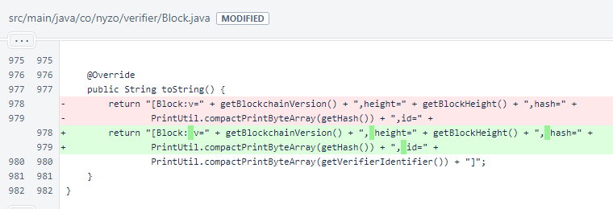In ManagedVerifier, the responseIdentifier field was added. This is used to store the identifier that is being used to sign response messages from the verifier.
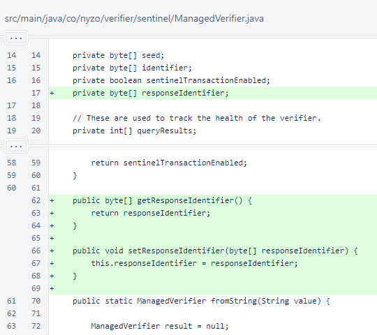In Sentinel.updateMesh(), the mesh request is now signed by the key of the ManagedVerifier, not the default system key. If the seeds are correctly specified, this means that all requests coming from sentinels will be self-signed from the verifier's perspective. This does not yet alter any behavior, but it poses no additional computational burden and might be useful for the verifier in a future version.
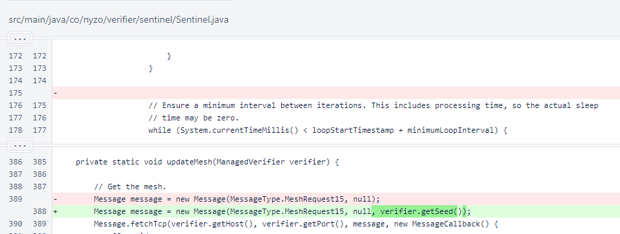When the mesh response is received, the sourceNodeIdentifier of the message is stored as the responseIdentifier of the ManagedVerifier. The type of the content is also checked to avoid a ClassCastException, but this is a minor cleanup, not a consequential change.
The comparison of the verifier's identifier to the source-node identifier of the response is consequential. Previously, responses from all identifiers were accepted. Now, if the seed of a ManagedVerifier is incorrect, it will no longer work as a trusted data source. This change was made to combat man-in-the-middle attacks that would seek to derail a sentinel's tracking of the blockchain by providing incorrect information.
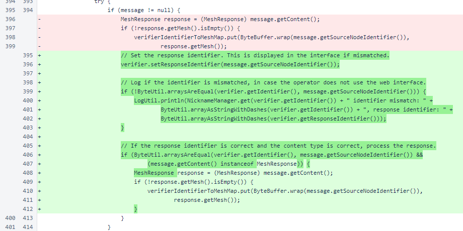In Sentinel.updateBlocks(), the block request is now signed by the key of the ManagedVerifier. This, like the updated signing of the mesh request, does not yet alter any behavior.
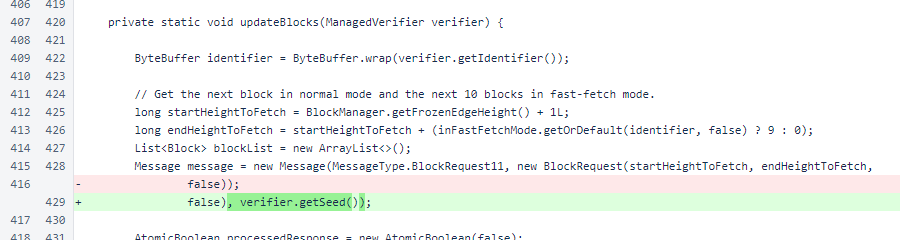When the BlockResponse is received, it is checked for content type and source-node identifier, just as the MeshResponse above. If the source-node identifier does not match the identifier specified for the ManagedVerifier, the block is rejected.
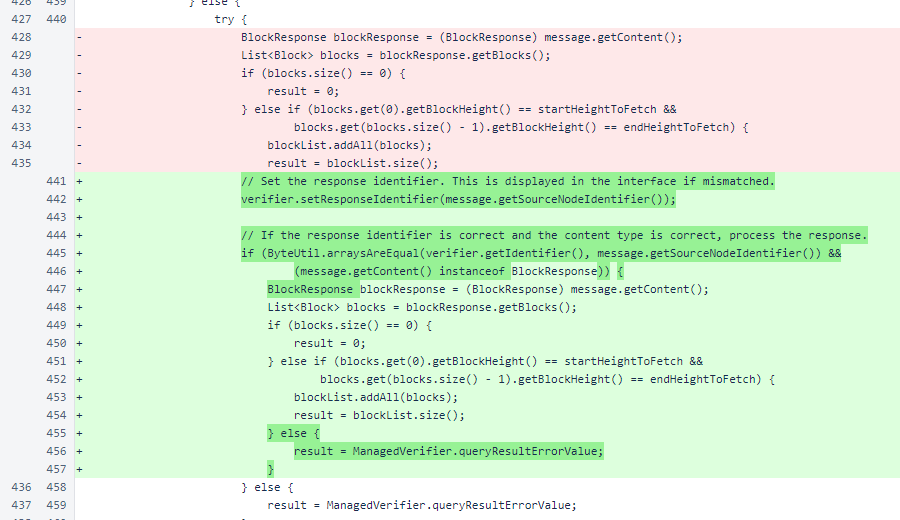In Sentinel.transmitBlockIfNecessary(), the new-block message is now built with the Message constructor that accepts a seed instead of using the default verifier seed. This constructor of Message was not available when the sentinel was implemented. This is a minor improvement that eliminates an unnecessary re-signing of the message.
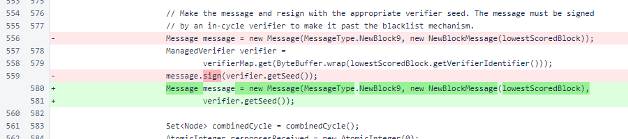In SentinelController, a section is now added to display all managed verifiers that are configured with incorrect seeds.
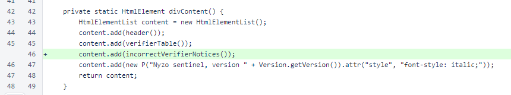CSS was added to give the verifier name label an orange background if the verifier does not appear to have the correct identifier. Notices about incorrect identifiers are placed below the table in orange italic text.
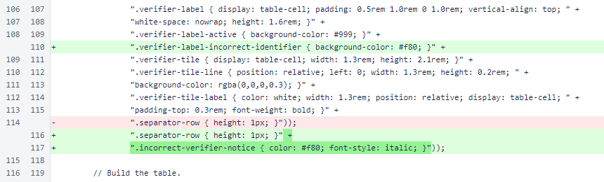The verifier-label-incorrect-identifier class takes precedence over the verifier-label-active class, which is darkens labels to indicate which verifiers were queried in the last time slot.
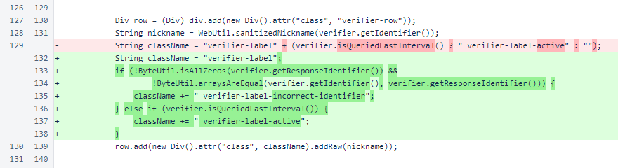SentinelController.incorrectVerifierNotices() renders messages to be placed below the table. These messages indicate which verifiers are not responding with the correct identifier, and they display both the correct identifier and the actual response identifier.
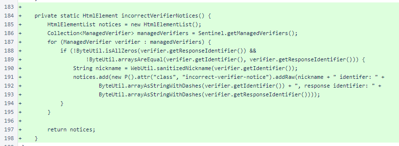In the web interface, incorrect response identifiers are obvious. Blocks are rejected, which turns all block tiles red, and the verifier name displays in orange. For any mismatches, the specified identifier and actual identifier of the verifier of any mismatches are displayed below the table.
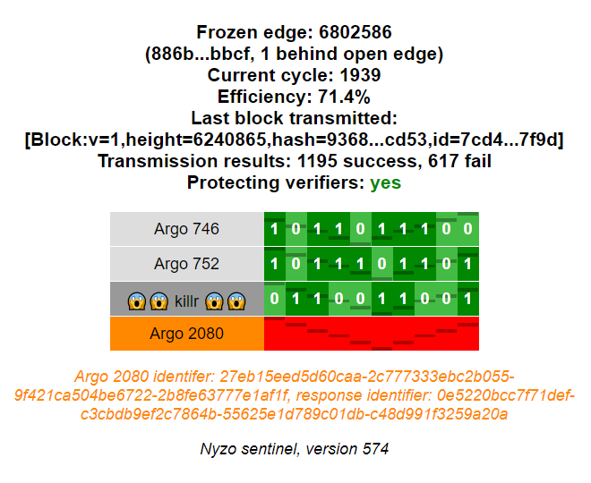